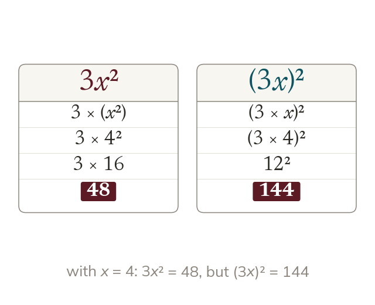

The index attaches to what it directly follows
An index attaches only to the letter or bracket it follows. 3x² means 3 × (x²): the 3 is not squared. (3x)² squares the whole term: 9x².
An index attaches only to the letter or bracket it follows, so 3x² means 3 × (x²) - the coefficient 3 is NOT raised to the power. (3x)² is different: the bracket means the whole term 3x is squared: 3x × 3x = 9x².